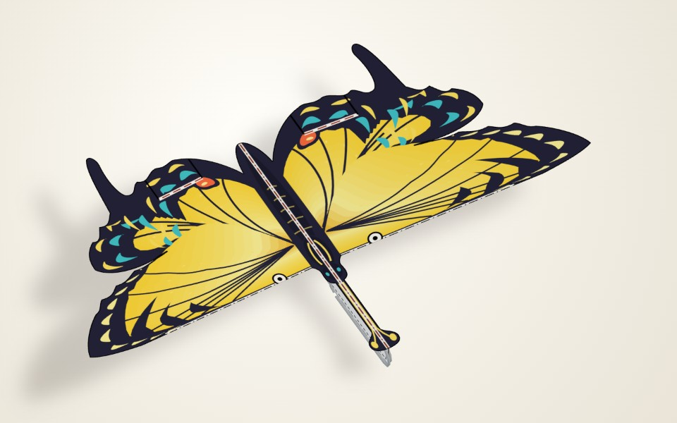

Recortar y plegar
Monarca
Sigue el ala naranja hasta la punta alargada. Las venas negras te ayudan a ver su forma. Al ensanchar la plantilla aumenta la superficie de las alas y el cuerpo conserva su longitud. La velocidad del aire, el ángulo del ala y el peso influyen en el planeo. Prueba dos envergaduras y marca los aterrizajes.
- Envergadura
- 172 mm
- Ángulo del ala con la horizontal
- 12 °
- Altura de las puntas
- 18 mm

Ilustración del movimiento
Qué necesitas
Papel de 120 g/m², tijeras, regla y dos clips de 33 mm.
Imprime la plantilla (K2)
Imprime al 100 % (Tamaño real) y comprueba con una regla que la escala del papel mide 50 mm.
Prueba este experimento
Empieza con las dos aletas de cola a ras. En la segunda serie sube un poco una sola. ¿En qué lado se concentran las primeras tomas de contacto?
Otros pliegues de mariposa
Alas con aletas (W1)
Pliegue central (K1)
Ver los otros modelos
-

Morfo azul
Recortar y plegar
-

Cola de golondrina
Recortar y plegar